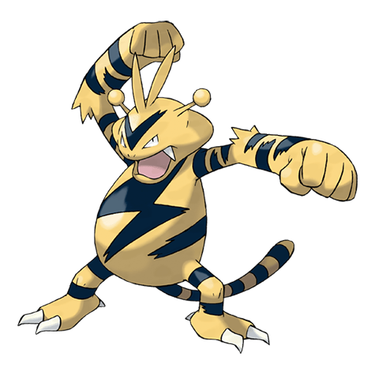

Назад
Электабаз

Электабаз — Покемон 1 поколения под номером 125 в Покедекс. Обитает он в регионе Канто и относится к Электрическому типу. Когда наступает шторм, группы Электабаззов соревнуются друг с другом в покорении высот, которые могут быть поражены молниями. В некоторых городах этих Покемонов используют в качестве громоотводов.
Тип:
Электрический
Эволюция
# 125 Электабаз